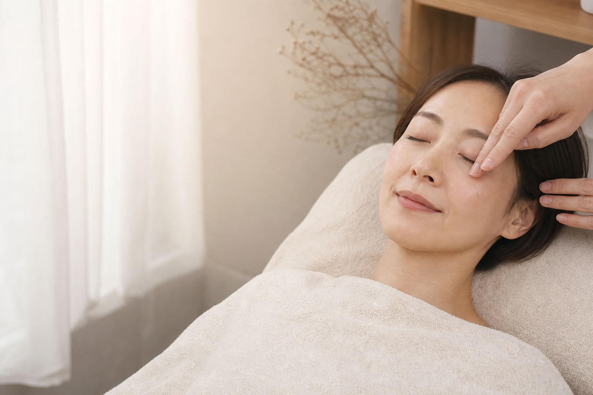
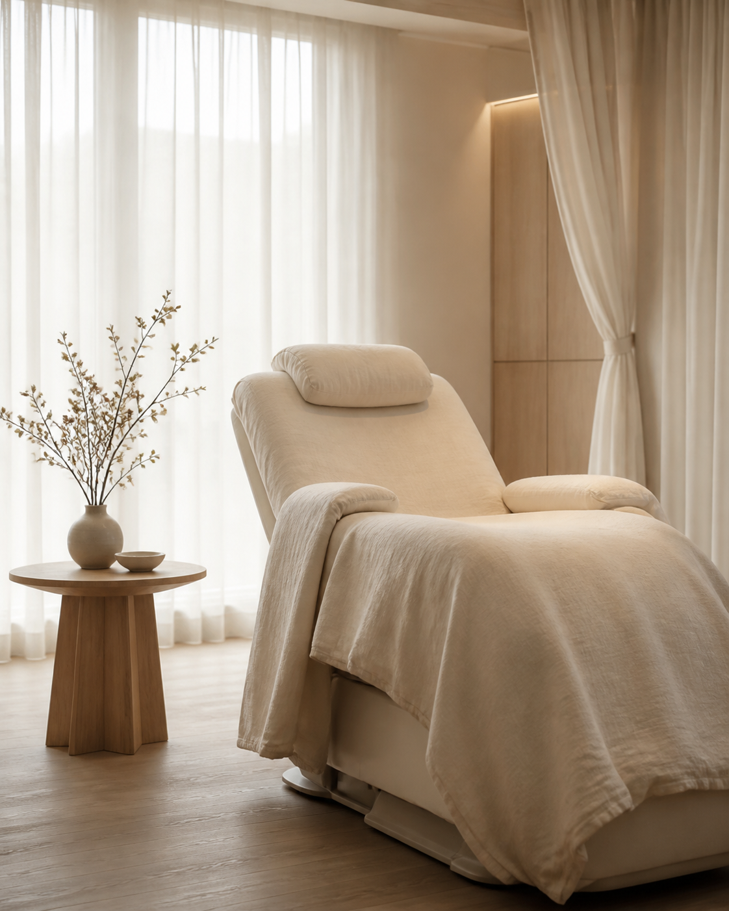

初めてのサロンで、
どんな仕上がりになるか不安。

scroll to explore
01 / Concept
「なんとなく」を、
あなたに似合うかたちへ。
派手にはしたくない。でも、今の自分に少し自信を持ちたい。Lueurはそんな大人女性のための、まつげと眉のプライベートサロンです。
表情・骨格・ライフスタイルまで丁寧に伺い、無理のない美しさを一緒につくります。
For you who want to自然に、でも確かに
印象を整えたい。
印象を整えたい。
02 / Worries
こんなお悩み
ありませんか？
自分に合うまつげ・眉の形が
よく分からない。
頑張りすぎず、自然に
きれいになりたい。
03 / Features
選ばれる理由
丁寧な
カウンセリング
なりたい印象も、普段の過ごし方も。言葉にならないご希望まで、ゆっくり伺います。
完全予約制の
プライベート空間
ほかのお客様を気にせず、静かな時間のなかで施術を受けていただけます。
一人ひとりに
合わせたデザイン
骨格やまぶた、毛流れを見極めて、毎日のメイクになじむ仕上がりをご提案します。
05 / Gallery
余白のある時間が、
目元の印象まで
やわらかくする。
慌ただしい日常から少し離れて、心までほどけるような施術時間を。

06 / Therapist
その人らしい表情を、
いちばん大切に。
はじめまして。オーナーの高瀬です。美しさは、誰かの真似をすることではなく、鏡を見たときに「これが私らしい」と思えることだと考えています。
目元だけを見ず、お顔全体の印象と日々の暮らしに寄り添う施術を心がけています。
Rina Takase07 / Voice
お客様の声
「派手にならず、でも目元がきれいに見える」仕上がりに毎回感動します。朝のメイクも本当にラクになりました。
相談しやすくて、眉の形も一緒に考えてもらえました。自分の顔が少し好きになれた気がします。
静かで心地よい空間です。年齢に合わせた自然な提案をしてくださるので、安心してお任せできます。
08 / Flow
ご来店の流れ
- 01ご予約WebまたはLINEから、ご希望日時をお選びください。
- 02ご来店ご予約時間の5分前を目安にお越しください。
- 03カウンセリングお悩みと理想の印象を丁寧に伺います。
- 04施術リラックスしてお過ごしいただけるよう進めます。
- 05アフターケア持ちをよくするケア方法をお伝えします。
09 / Salon Information
サロンのご案内
- 営業時間
- 10:00 - 19:00
- 定休日
- 月曜日 / 第1・第3火曜日
- 所在地
- 東京都目黒区青葉台 1-8-12
青葉台ビル 202 - アクセス
- 中目黒駅より徒歩6分
- お支払い
- 現金 / クレジットカード / 各種電子決済
nakameguro
tokyo
tokyo
10 / FAQ
よくあるご質問
初めてでも大丈夫ですか？
もちろんです。初回はカウンセリングのお時間をしっかり確保し、仕上がりのイメージを確認してから施術を始めます。
施術時間はどのくらいですか？
メニューにより60〜120分ほどです。詳しくは各メニューの所要時間をご確認ください。
キャンセルや変更はできますか？
前日18時までにご連絡をお願いいたします。当日のキャンセルは、次回のご予約をお控えいただく場合がございます。
メイクはして行っても大丈夫ですか？
アイメイクは控えてお越しください。眉メニューは、2〜3週間ほど自己処理をせずにご来店ください。
11 / Reservation
目元から、
今日の自分を少し好きになる。
ご予約・ご相談はWeb予約またはLINEから承ります。